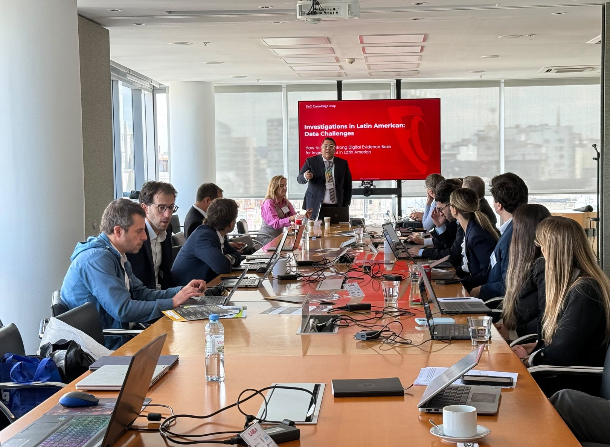
En los foros
Investigación forense y compliance: encontramos la causa raíz de fraudes, denuncias y riesgos internos con evidencia sólida, método y total confidencialidad.


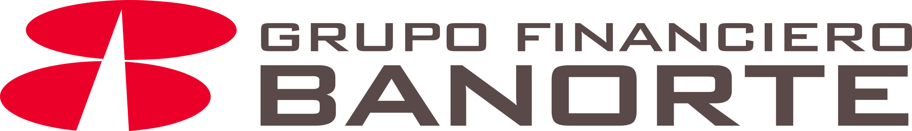


Preservamos la evidencia desde el primer día, analizamos con trazabilidad y entregamos un informe ejecutivo que se sostiene ante el consejo, una autoridad o un juez.
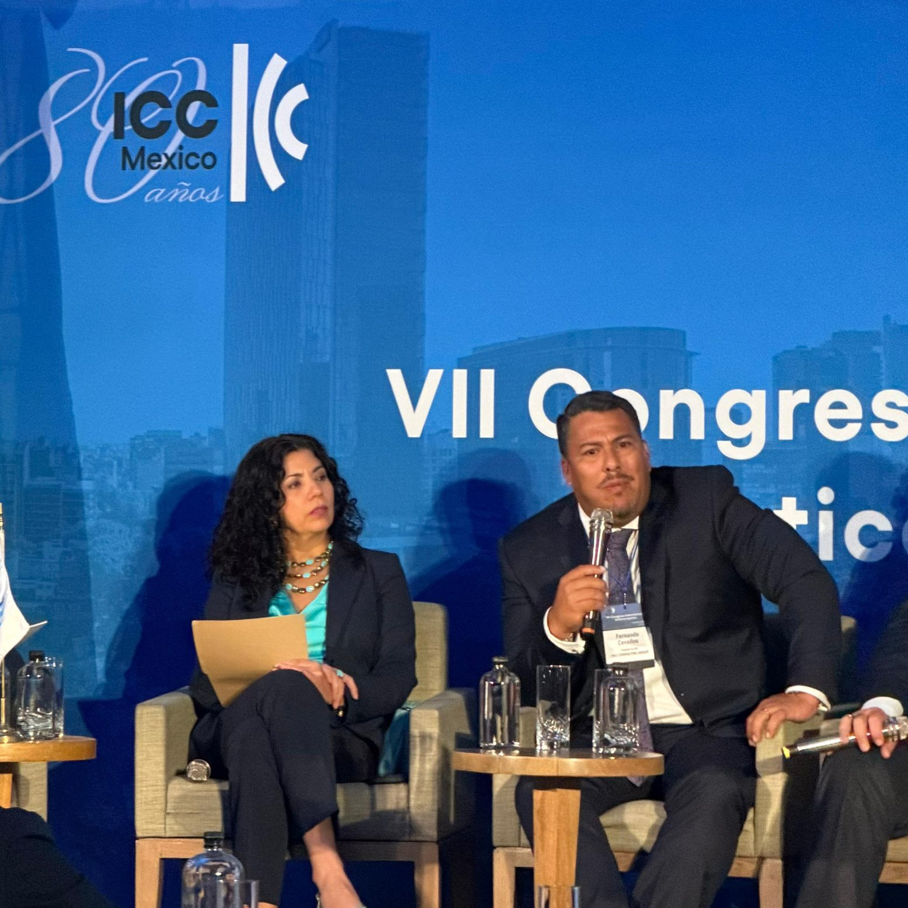
Trabajamos junto a tus áreas legal, de auditoría y de compliance para que se enfoquen en decidir, no en investigar.
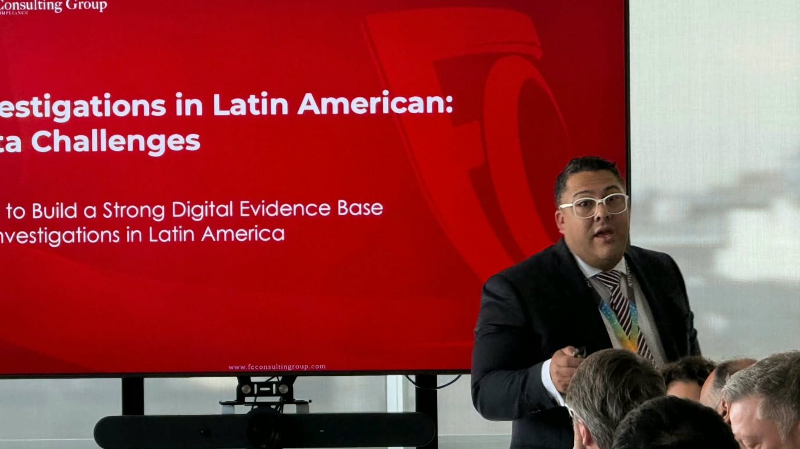
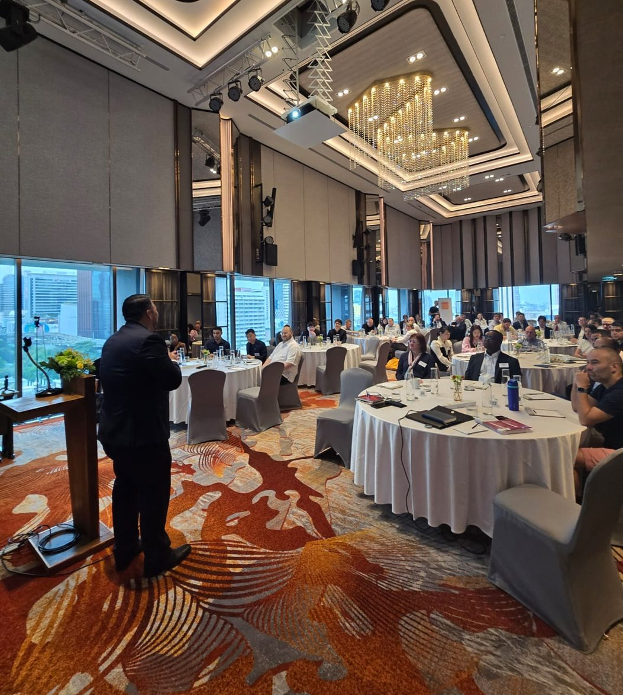
Representantes académicos de PECB en Latinoamérica: certificaciones ISO 37001, 37301, 27001 y 42001 en vivo.
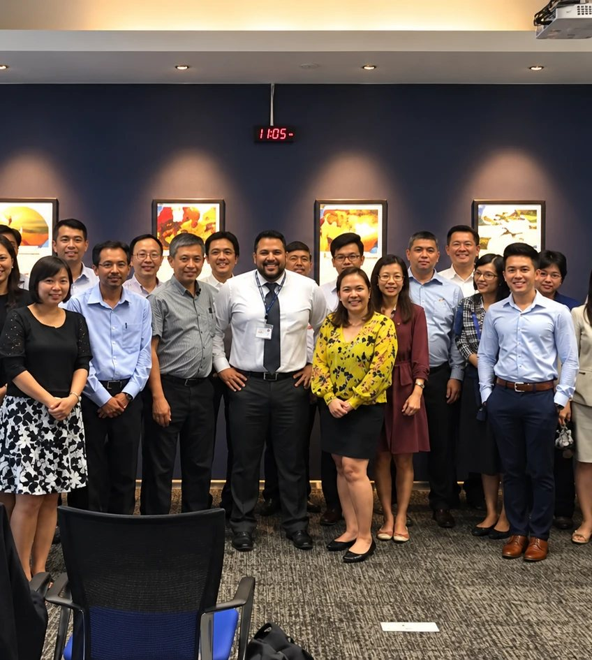
Especialistas en Estados Unidos, México y América Latina, con experiencia en foros y capacitaciones internacionales.
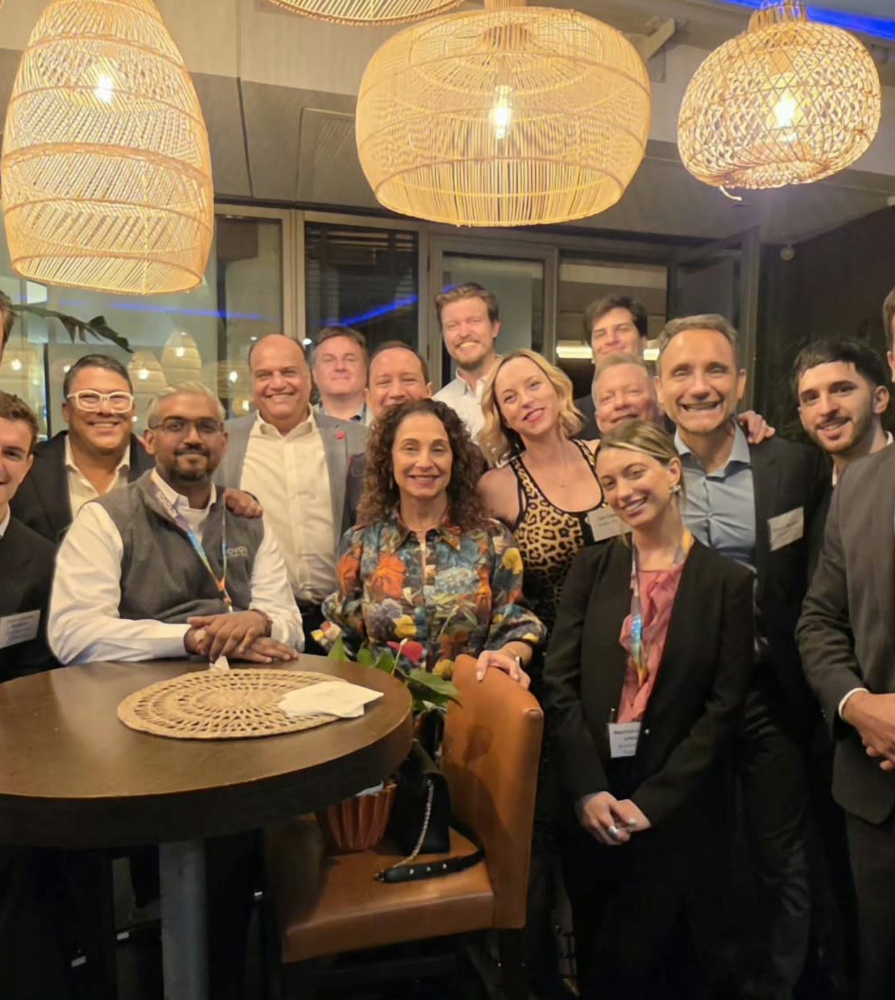
Patrocinadores y ponentes en LAIILA, Buenos Aires, y panelistas en el VII Congreso Internacional de ICC México.
Una década como firma de investigación forense y compliance, desde 2016.
10 años
Casi 30 años de experiencia de nuestros líderes en investigación, auditoría y control interno.
30 años
Especialistas en Estados Unidos, México y América Latina, con experiencia en Asia.
Conoce al equipo15
Un método forense documentado: entendimiento, preservación, análisis, validación e informe.
Conoce el método5 etapas

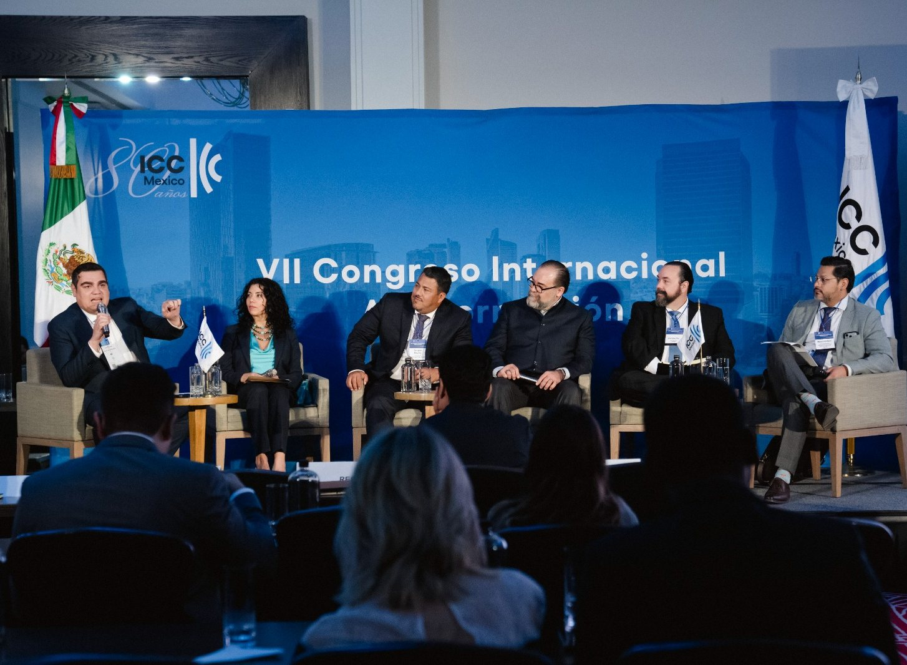
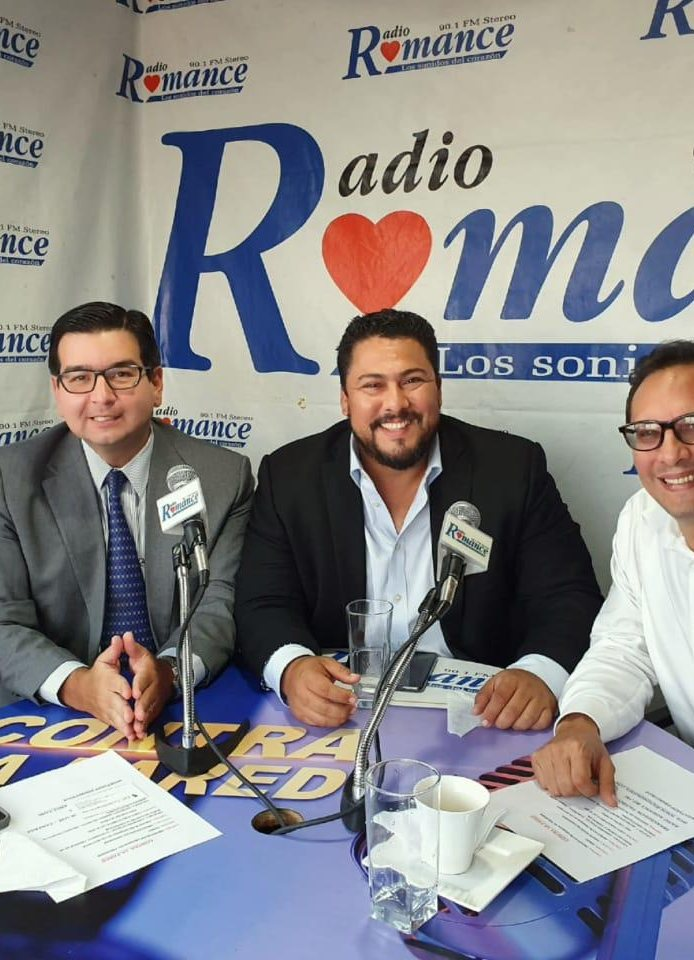
Contra la Pared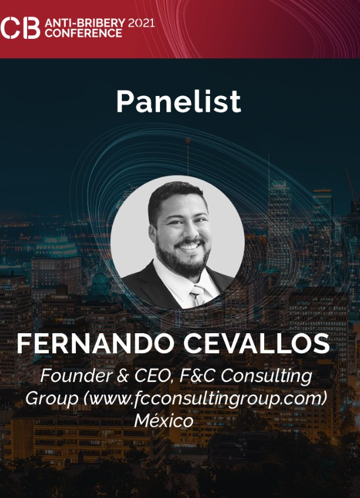
PECB Anti-Bribery Conference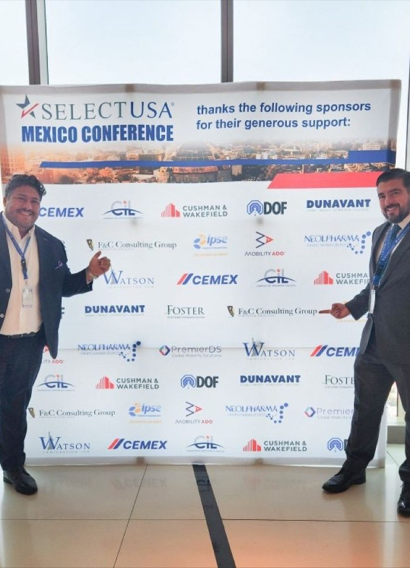
SelectUSA Mexico Conference“F&C llegó a la causa raíz de una denuncia interna en semanas, con evidencia preservada y un informe listo para el consejo.”
“Pasamos de un programa de cumplimiento de papel a un sistema trazable y auditable, listo para la certificación ISO 37301.”
“El background check nos dio la tranquilidad de cerrar una alianza sabiendo con quién tratábamos.”
“Con F&C Academy nuestro equipo aprendió a investigar denuncias con método, plazos claros y total confidencialidad para quien reporta.”
“El enfoque de F&C nos ayudó a visualizar brechas que no habíamos detectado. Trabajo de primer nivel y personalizado.”
“Su metodología forense nos dio claridad para decidir con evidencia y no con sospechas. Un equipo serio y confidencial.”
“Nos acompañaron desde la primera sesión hasta el comité de ética, cuidando en todo momento a quien denunció.”
“El análisis de riesgos de fraude cambió la forma en que diseñamos nuestros controles. Hoy prevenimos en lugar de reaccionar.”
“Contar con peritos que entienden de finanzas y de tecnología hizo la diferencia en un caso complejo con nuestros abogados.”
“F&C llegó a la causa raíz de una denuncia interna en semanas, con evidencia preservada y un informe listo para el consejo.”
Desde la primera sesión estratégica hasta el informe ejecutivo, sabes en qué etapa está tu caso.
Sigue cada etapa del método forense: desde la primera sesión estratégica hasta el informe ejecutivo, con acceso controlado a la información.
Recibe reportes, protege a quien denuncia y lleva cada caso hasta el comité de ética con protocolos de confidencialidad.
Background check y debida diligencia antes de cerrar una alianza, contratar o invertir.
Del análisis de brecha a la certificación: implementamos y auditamos sistemas de gestión con organismos acreditados.
Acuerdos de confidencialidad, equipo reducido y acceso controlado a la información de cada caso.
Una firma externa que investiga con independencia y reporta a quien tú designes.
Cadena de custodia, trazabilidad y un método documentado que resiste la revisión del consejo, de una autoridad o de un juez, en cualquier país.
Especialistas en Estados Unidos, México y América Latina para casos que cruzan fronteras.
Nuestros líderes suman casi 30 años en investigación, compliance y control interno. Participaron en el desarrollo de las normas ISO 37001 e ISO 37301 y forman auditores e implementadores líderes en toda la región.
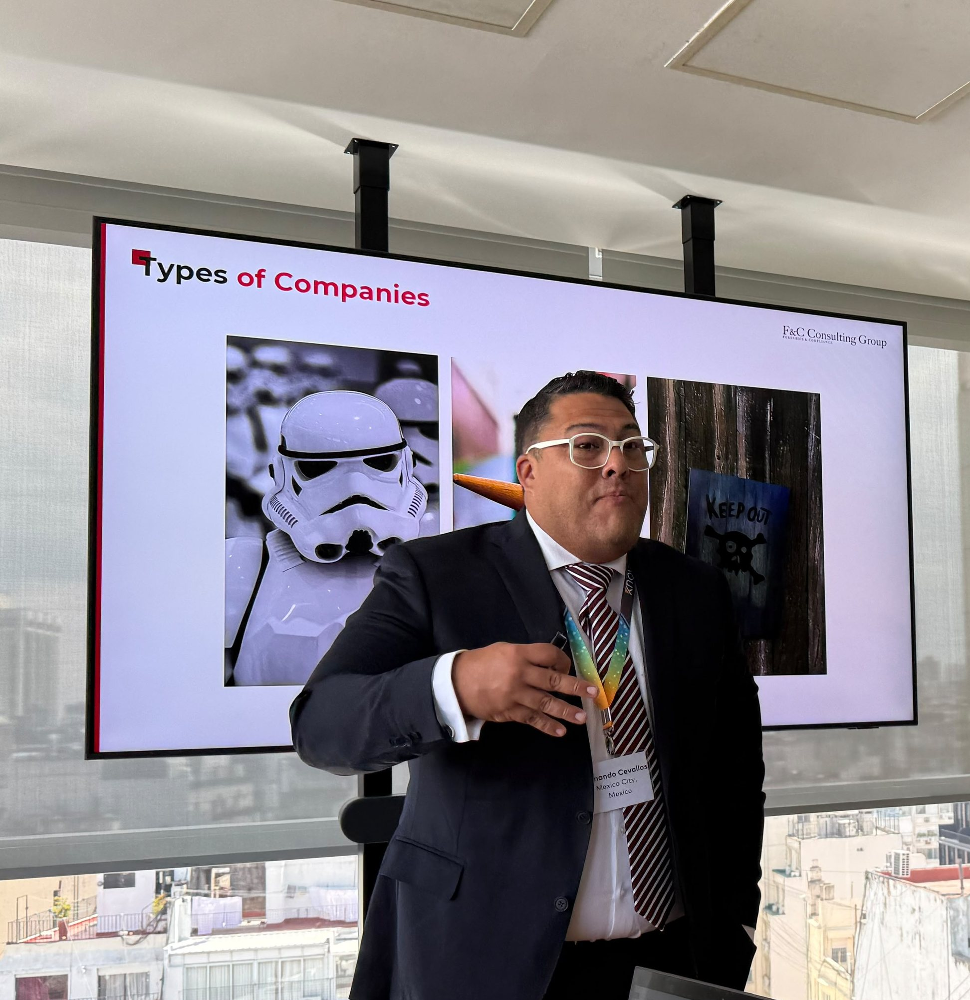
Fernando Cevallos y el equipo de F&C te acompañan con total confidencialidad, desde la primera sesión hasta el informe ejecutivo.
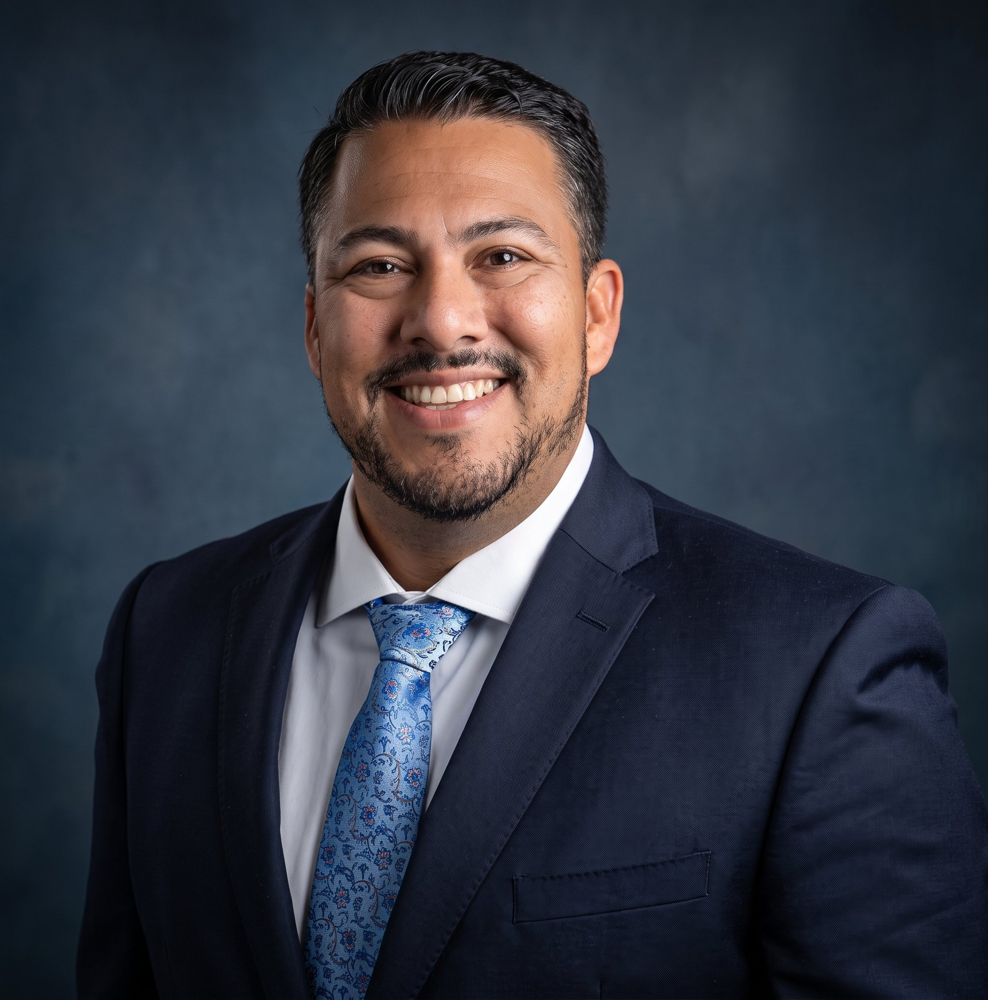